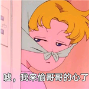

I'm a little bit of frustration, but fortunately you are here.
09.25.2019
今天是10月1日，和困困在一起的第10个月，也是祖国妈妈的70岁生日。应该记录在9月里的，但是，嗷，10月的模板还没搞好，仍旧记录在9月里吧。
今天台风“米娜”还影响了上海，现在能听到寝室外面风呼呼呼，和困哥哥经历了狂风暴雨，嗷，这个后续再讲。
先说说困哥哥的情话吧。想了一个月终于给妈妈买了50岁生日礼物，一条项链。觉得很贵重，放在包包里，时不时看一眼怕被怪盗基德偷走了。困哥哥说世界上只有一样东西是不用接触就能被偷走的，知道是什么吗？是什么呢？是♥哦！哇哦，那困哥哥干嘛偷我的♥。因为是你先把我的♥偷走的呀。(貌似原话是“是你先动手的呀”，此处可可自己做了加工)。被我的困哥哥撩到了。
台风中才知道小米伞为什么值99了。绝了。困哥哥撑着伞挡住狂风的样子真帅，那个瞬间觉得，我又想结婚了呢。最后还是收了伞，跑到宿舍楼里，彼此狼狈的样子，那个瞬间觉得，我又想结婚了呢。
明日是带困哥哥去阿姨家的日子，激动。
我和我的祖国~一刻都不能分割~